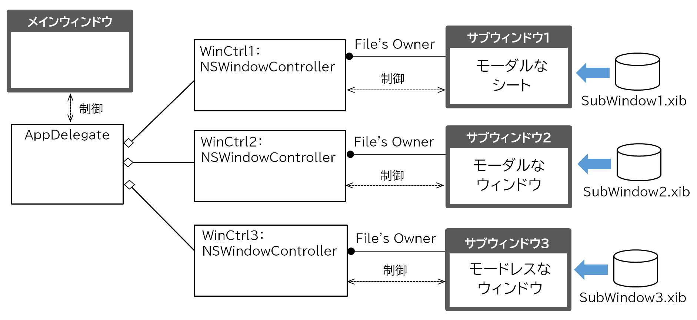
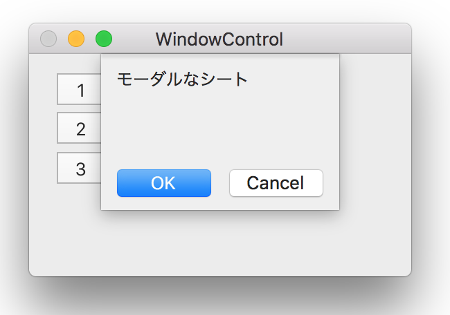
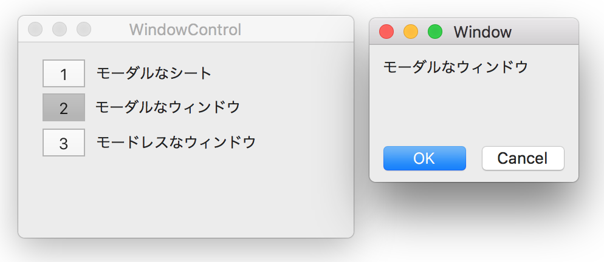
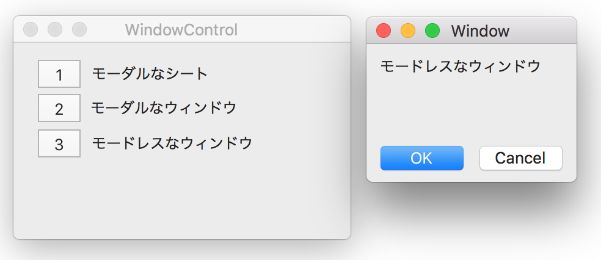
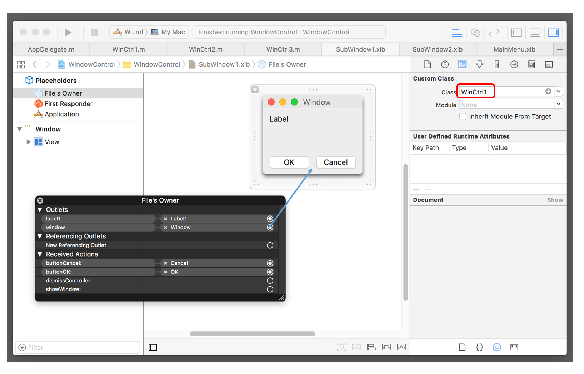

メインウィンドウからサブウィンドウを開く
ウィンドウアプリケーションのメインウィンドウからサブウィンドウを開く場合、表示モードは、「モーダル」か「モードレス」のいずれかになる。
モーダルなウィンドウは、サブウインドウを開くとイベントループ制御がメインウインドウからサブウインドウに移り、サブウィンドウを閉じるまでメインウインドウの操作ができなくなる。モーダルなウィンドウには、「シート」と、通常の「ウィンドウ」がある。。
サンプルアプリケーションを元に、それぞれのウィンドウ制御の実装方法について説明する。

サンプルアプリケーションの仕組み
AppDelegateは、サブウィンドウを制御するウィンドウコントローラオブジェクトを作成し、保持することで全体を制御する。
メインウィンドウにサブウィンドウを開くボタンを定義し、ユーザーがボタンをクリックすると、対応するサブウィンドウが開くようにする。
モーダルなシート
「シート」は、ウインドウのタイトルバーの下から飛び出す小さなウィンドウのことである。例えば、アプリケーションの「テキストエディット」を起動し、「プリント」を選ぶと部数などを入力するシートが現れる。

ウィンドウコントローラクラスの定義と実装
初期化
AppDelegateはウィンドウコントローラーを作成し、自身のプロパティに保持する。初期化のときに指定されたxibファイルからウィンドウオブジェクト（シート）を読み込む。
シートを開く
AppDelegateは、サブウィンドウ（シート）を引数として、メインウィンドウの beginSheetメソッドを呼ぶ。これによりシートが現れる。completionHandlerにシートを閉じたときのコールバック処理を記述する。
シートを閉じる
ウィンドウコントローラの中から、メインウィンドウのendSheetメソッドを呼ぶ。
モーダルなウィンドウ
ウィンドウコントローラクラスの定義と実装
初期化
AppDelegateはウィンドウコントローラーを作成し、自身のプロパティに保持する。初期化のときに指定されたxibファイルからウィンドウオブジェクトを読み込む。
ウィンドウを開く
AppDeelegateは サブウィンドウを引数に NSAppクラスのrunModalForWindowメソッドを呼ぶ。これによりイベントループ制御がサブウインドウに移る。
ウィンドウを閉じる
ウィンドウコントローラの中から、NSAppクラスのstopModalWithCodeメソッドを呼ぶ。これによりイベントループはメインウィンドウに戻る。および、サブウィンドウのcloseメソッドでウィンドウを閉じる。両メソッドの実行は順不同でよい。
サブウィンドウを Xボタンで閉じたときに、イベントループをメインウィンドウに戻す必要がある。
モードレスなウインドウ
ウィンドウコントローラクラス
初期化
AppDelegateはウィンドウコントローラーを作成し、自身のプロパティに保持する。初期化のときに指定されたxibファイルからウィンドウオブジェクトを読み込む。
ウィンドウを開く
AppDelegateはウィンドウコントローラの showWindowメソッドを呼ぶ。イベントループ制御は、フォーカスの移動により、メインウィンドウとサブウィンドウの間で切り替えることができる。モードレスなウィンドウは表示位置を指定することができる。
ウィンドウを閉じる
ウィンドウコントローラから自ウィンドウのcloseメソッドを呼ぶ。
Interface Builderの設定（忘れやすいのでメモしておく）
サブウィンドウのFiles Ownerは、ウィンドウコントローラクラスとする。ウィンドウコントローラのWindowプロパティは、サブウィンドウに対してOutlet接続しておく。
